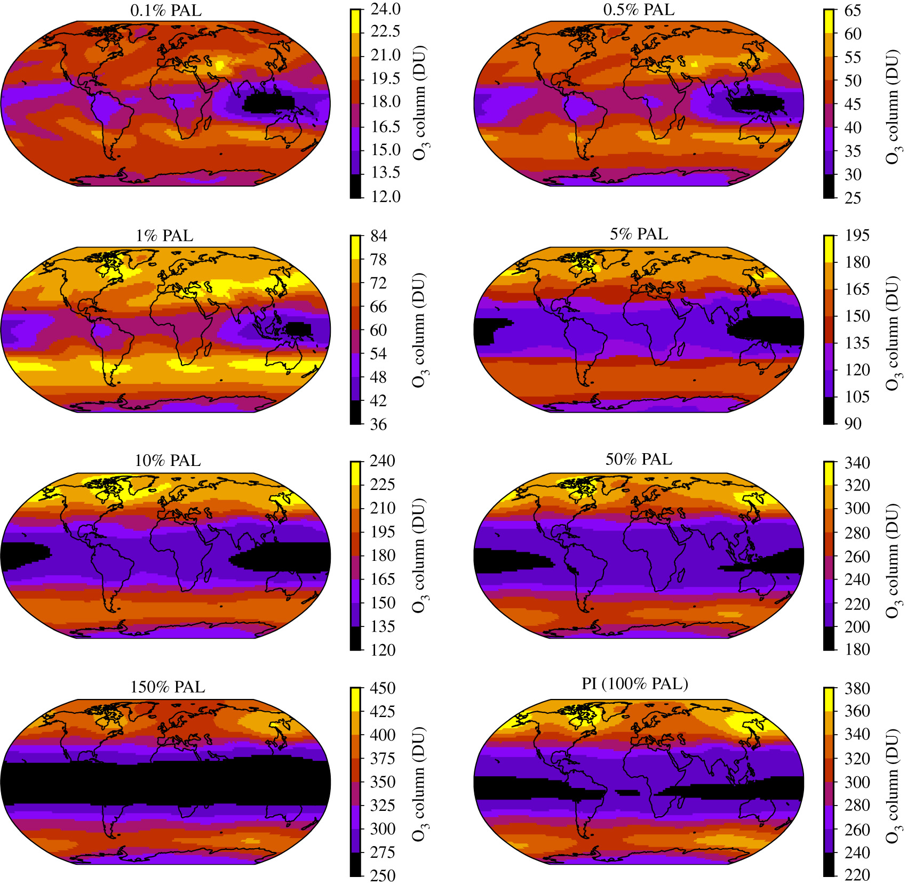
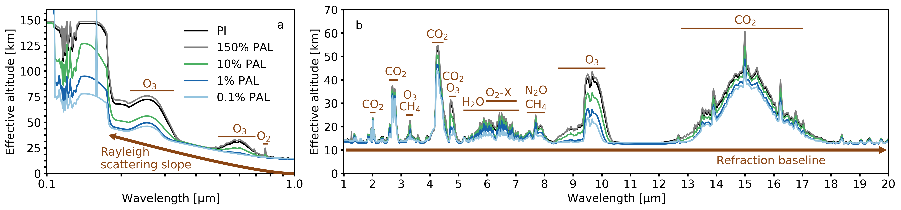

Research
Read on to find out more about my research and code developments.
Early Earth: Proterozoic to present day

We used WACCM6 to simulate the Earth's oxygen concentrations between 2.4 billion years ago and the present day. Oxygen has fluctuated in this time between levels of 0.1% the present atmospheric level (PAL) all the way up to 150% PAL. We were able to predict the spatial and seasonal variation of Earth's ozone layer and how it varies with oxygen concentration. Future work in this area will focus on improving various physical parameterizations to more accurately simulate the low oxygen scenarios. Additionally, accounting for the changing continents will be of interest. The paper we published on this can be accessed at https://doi.org/10.1098/rsos.211165
Observational predictions
I use the 3D climate simulations to predict what these exoplanet atmospheres may look like through current and next-generation telescopes. To do this, I developed a pipeline in Python to take WACCM6 simulation data and process it so it can be uploaded to the GlobES application from the NASA Planetary Spectrum Generator (PSG). These observational predictions take the form of transmission spectra or direct imaging spectra.
In transmission spectra, the exoplanet passes in front of the star and blocks light - this is known as a transit. The amount of light it blocks depends on the radius of the planet, the radius of the star, as well as the exoplanet's atmospheric pressure and atmospheric composition. During a transit, light will pass through the atmosphere, and different wavelengths of light will be absorbed with various efficiencies, depending on the temperature, pressure, and chemical composition of the atmosphere. This blocks out further light compared to the solid disk of the planet. It may not be possible to probe the lowest part of the atmosphere due to the refraction of light away from the observer. For Earth, this altitude is roughly 13 km above the surface. Clouds also affect the ability to probe the lower atmosphere.
In direct imaging, the exoplanet is directly imaged, and its spectra will be due to reflection, emission, or a combination, depending on which wavelengths are being observed, and the temperature of the exoplanet. The depth of absorption features in reflection spectra depend on the amount of absorber in the atmosphere, and can be influence by clouds at different altitudes, with some boosting reflectivity and others decreasing reflectivity. The depth of absorption features in emission spectra depend on the relative temperature between the surface and the absorption layer. Cooke et al. (2022), which is based on direct imaging (reflection spectra) predictions for the LUVOIR and HabEx telescope concepts, is due to be published in MNRAS shortly. For now, you can read the pre-print version on arXiv.
Tidally locked exoplanets
I am currently working on various projects related to tidally locked exoplanets. Tidally locked exoplanets synchronously rotate around their host star. This means that their orbital period is the same length as their rotational period. However strange it sounds, some exoplanets out there have a dayside and a nightside that never changes. So, one side will be permanently hotter and one side permanently colder than the other.
We are using CESM2 to investigate the chemistry and dyanmics of rocky exoplanets that orbit various M dwarf stars. The results are exciting but not yet finalised. I will update this section when I can tell you more!
Atmospheric escape
When using a whole atmosphere climate model like WACCM, we are able to predict atmospheric concentrations of various species in the tehermosphere. Through some assumptions, we can predict atmospheric escape rates based on these concentrations.
Code developments
I have written a code in Python in Jupter Notebook known as (SWIM). This code downloads stellar spectra and rebins them to a specifc climate model wavelength grid. It then scales the spectra to that of a specific planet.
This code can be adapted to be used with different models. If you would like to include your model, please get in touch and I would be happy to add it into the code!
With future modifications and improvements, this will be a very useful open-source tool for use in the fields of exoplanet climate modelling, exoplanet atmospheric escape modelling, and protoplanetary disk modelling, amongst others.